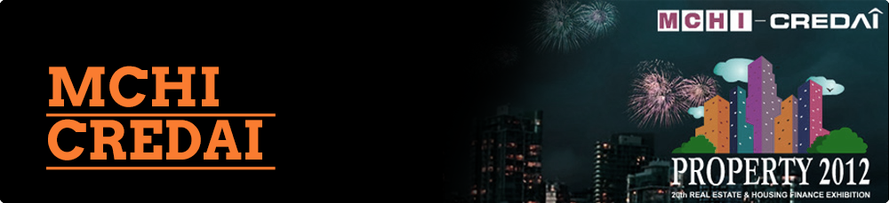

Environment
In January of 2012 the Real Estate Sector drew flack from all quarters. Skyrocketing prices of property took homes beyond the reach of ordinary home buyers. Media too continues fuelling this negative perception. What followed was a total Government Policy Paralyses that brought the Real Estate Industry to a grinding halt. Mumbai – the clichéd “commercial capital” as well as the “real estate mogul” of India, was amongst the 6 worst hit cities. Delhi- NCR, Bangalore, Chennai, Hyderabad and Pune being the others. “Housing for All” – was a mantra soon relegated to the dusty godowns of Mantralaya.
At Concept PR, one of the leading public relations firms in India, we pride ourselves on our crisis management and reputation management abilities. MCHI-CREDAI, offered one more opportunity to challenge our skills.Agency Brief
A three-fold task:-
- Establish MCHI –CREDAI as the credible voice of the industry. A body that would insure best practices amongst its members and assure buyers that they are genuinely interested in their welfare
- Improve the image of the developer community and assure them that the body is focused at overhauling business prospects
- Change media perception that developers are cheats.
Strategy
At Concept PR, we believe that the most critical factor in re-building trust is to present a visible change of perspective, vision and intent. As such, we decided to focus both inward and outward.
- Set the house in order and demonstrate that developers mean business - good, ethical business at that
- Guidelines were set for Self-Regulatory Code of Conduct for all developers
- A Consumer redresser mechanism had to be defined
- Covert the hate into sympathy by focusing on real problems like approval delays, government in action
Events and Action
- A positive impact on media and building media relations itself was most pertinent. Our team ensured comments on policy discussions were well covered and focussed across our media outreach plan.
- Media House visits by MCHI CREDAI teams, one-on-one interviews and press conferences put the realty sector back in the buzz
- We relentlessly focussed the developers’ attention to walk-the talk – be good, do good and be seen as doing good, to convert the hate into sympathy. Approval delays, government inaction presented one of the largest challenges before the community
- To design “a change of heart” our team worked closely with the MCHI- CREDAI core group to create and executed strong, hard-hitting media stories like Tax Par Tax, Tax Par Tax...Par Ghar Nahin Milta; Housing For All Plan Gathers Dust in Mantralaya and so on. The stories highlighted the developers’ plight that was leading to home buyers’ angst, in order to build empathy for the former
- The stories were carried in national dailies and their response and impact was monitored across media by the Concept team
- A war-room set-up at Concept Mumbai ensured a 24X7 vigil kept pace with consumer sentiment
The Result
- This six month campaign helped MCHI-CREDAI gain media acceptance of their stand-point. Discussions highlighting real estate developers’ woes made headlines across print television and social media platforms. While it would be overstating to say that the consumer had a change of heart but certainly consumer discussions showed a willingness to understand the developer perspective
- The biggest outcome of the campaign most certainly was in the impact it had on the government. The Chief Minister of Maharashtra invited the MCHI-CREDAI delegation for talks and has promised action. The Press Conference that was convened to announce a strike by developers was converted into a “Thank you CM” event
- The crowning glory was that PR professionals’ national body Public Relations Council of India felicitated MCHI CREDAI with the prestigious “Organisational Excellence (PR)” Award for 2011-12
- The media, that hated developers before the campaign, today calls up MCHI CREDAI office bearers for interviews and quotes for industry trend stories and features